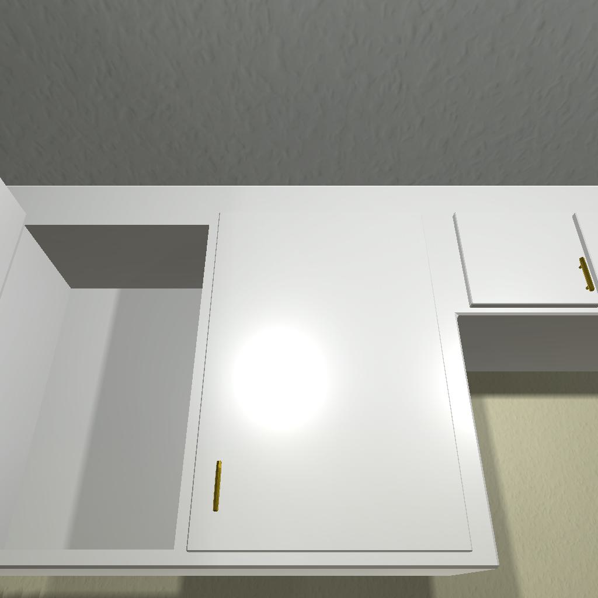
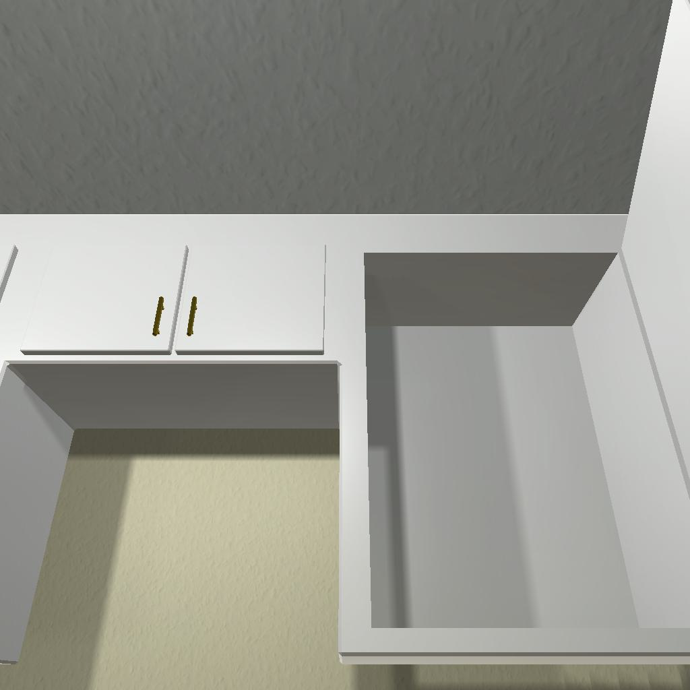

---------------------------------------------------------task: 18---------------------------------------------------------
--------------------------------------------------------------------------------------------------------------------------------------------------------------------
--------------------------------------------------------------------------------------------------------------------------------------------------------------------
Step:--------------------------------------------------------------------------17-------------------------------------------------------------------------------
----------------------------------------
VLM Prompt:
Image1:
Image2:
Image3:
**Instruction**
1. Analyze the provided images to identify all visible household objects and compare the difference between images (e.h. whether the object is opened or not and taken on hand or not), focusing on those relevant to the task description "put a cool pot in cabinet."
2. Use the analysis of images and the task hint "The agent must find an object of the desired type, pick it up, go to a fridge, cool the object with the fridge, then find the correct location to place it, and put it down there. The agent does not need to use the fridge button or open the fridge to cool the object, and the agent just needs to do action that is "cool the object with the fridge"." to answer the question: what is the most reasonable action in the choices for the task description "put a cool pot in cabinet"?
3. Decide and write the answer using the template: The answer is: (i): , where i is the real number. If there is no desired object in images, search every place based on **Initial Observation** to find the object. And if no one is exactly correct, choose a similar answer.
**Initial Observation**
You are in the middle of a room. Looking quickly around you, you can see cabinet (1-20), countertop (1-3), coffeemachine (1), toaster (1), sink (1), fridge (1), microwave (1), garbagecan (1), drawer (1-3), sinkbasin (1), stoveburner (1-4), shelf (1-3)
**Answer Choices**
(1): go to cabinet 3
(2): go to cabinet 4
(3): go to cabinet 5
(4): go to cabinet 6
(5): go to countertop 1
(6): go to coffeemachine 1
(7): go to cabinet 7
(8): go to toaster 1
(9): go to cabinet 8
(10): go to sink 1
(11): go to fridge 1
(12): go to microwave 1
(13): go to garbagecan 1
(14): go to cabinet 9
(15): go to cabinet 10
(16): go to countertop 2
(17): go to cabinet 11
(18): go to cabinet 12
(19): go to drawer 1
(20): go to countertop 3
(21): go to drawer 2
(22): go to cabinet 13
(23): go to sinkbasin 1
(24): go to cabinet 14
(25): go to drawer 3
(26): go to stoveburner 1
(27): go to stoveburner 2
(28): go to stoveburner 3
(29): go to cabinet 15
(30): go to stoveburner 4
(31): go to cabinet 16
(32): go to cabinet 17
(33): go to cabinet 18
(34): go to cabinet 19
(35): go to cabinet 20
(36): go to shelf 1
(37): go to shelf 2
(38): go to shelf 3
(39): close cabinet 2
(40): take nothing from cabinet 2
(41): examine cabinet 2
**Answer**
Let's think step by step by following the instructions.
----------------------------------------
----------------------------------------
Original Response:
Firstly, we analyze the provided images to identify all visible household objects and their states. In all three images, we see cabinets with numbered handles indicating their respective numbers.
In Image 1, cabinet 2 is open, and there is a bright light inside it, which might indicate the presence of a pot since the task is related to putting a cool pot in the cabinet. However, it's not clear if the pot is indeed there or if it's cool.
In Image 2, cabinet 2 is now closed, but we cannot confirm if the pot has been taken or if it was there in the first place.
In Image 3, the cabinet 2 is closed as in Image 2, and there seems to be no change in this state.
The task description "put a cool pot in cabinet" suggests that we need to find a pot, cool it with the fridge, and then place it in a cabinet. However, the images do not show a fridge, and there is no action related to cooling the pot in the fridge in the answer choices. Therefore, we can assume that the pot has already been cooled as per the task hint.
Based on the initial observation, there's a possibility that the pot is in cabinet 2 since it was open in Image 1 and there was a bright light inside it, which could be the agent's indication of the desired object.
The most reasonable action from the choices provided, considering the task is to put a cool pot in a cabinet, would be to go to the cabinet where the pot is likely to be, which we assume is cabinet 2 based on the open state in Image 1 and the task hint. But there is no choice to go to cabinet 2; instead, there is an option to examine cabinet 2, which could be the next logical step to confirm the presence of the cool pot before placing it in the desired location.
The answer is: (41): examine cabinet 2.
----------------------------------------
----------------------------------------
>>> Refine Original VLM Response and Get Pure Action: examine cabinet 2
----------------------------------------
-----------------------------------------------------------------
Running time: 28.50787901878357 seconds
Total Money: 11.248680000000002
-----------------------------------------------------------------
-----------------------------------------------------------------
Text Observation:On the cabinet 2, you see nothing.
-----------------------------------------------------------------
UNSUCCEED